We build the engineering foundations that make enterprise AI work.
Parkar is an enterprise engineering firm that helps Healthcare, Financial Services, Manufacturing, and Technology organisations modernise across data, cloud, applications, and IT - and become genuinely intelligent with AIONIQ and Vector.
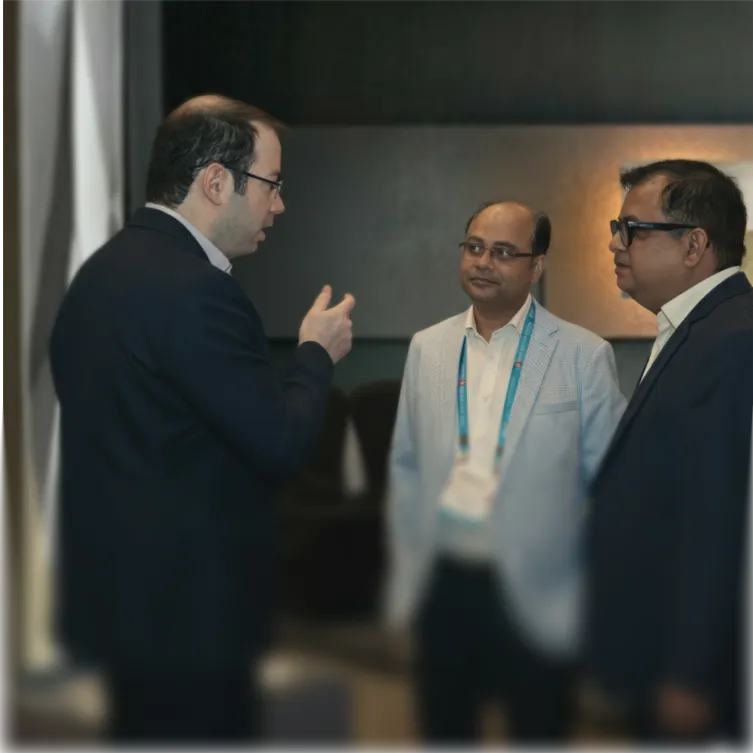
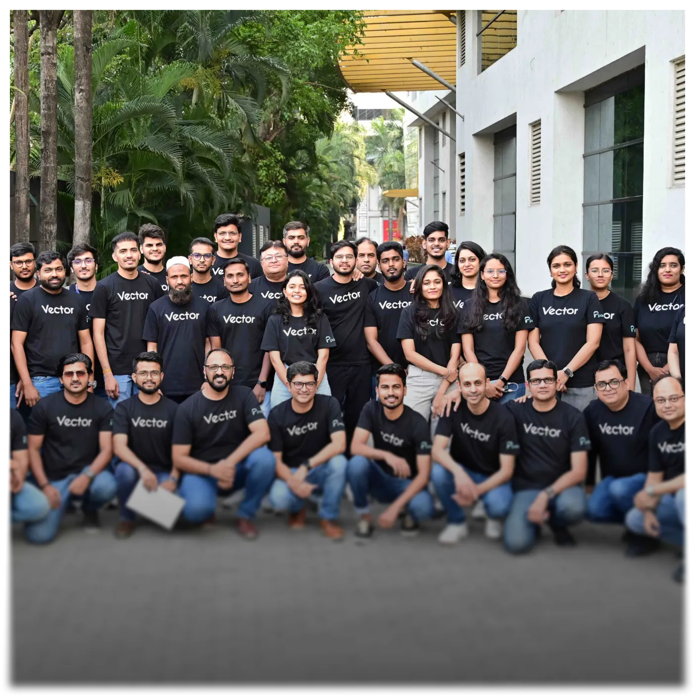
To drive innovation, foster collaboration, and deliver excellence, empowering people and businesses to thrive and make a difference.
Join us on this journeyDriving meaningful change in technology and society
We are dedicated to reshaping technology, empowering our clients, and building a purposeful community that drives progress.
- Partner with clients to achieve their ambitious goals.
- Build proprietary platforms — AIONIQ and Vector — so that every client engagement is faster, more observable, and more governed than a pure services model can deliver.
- Move enterprises from AI ambition to production-ready agentic workflows, with the data foundations, cloud infrastructure, and operational discipline to sustain them.
- Inspire positive social impact and champion an equitable tech future.
- Foster a diverse, vibrant community of passionate innovators.
- Deliver sustainable growth and enduring success.
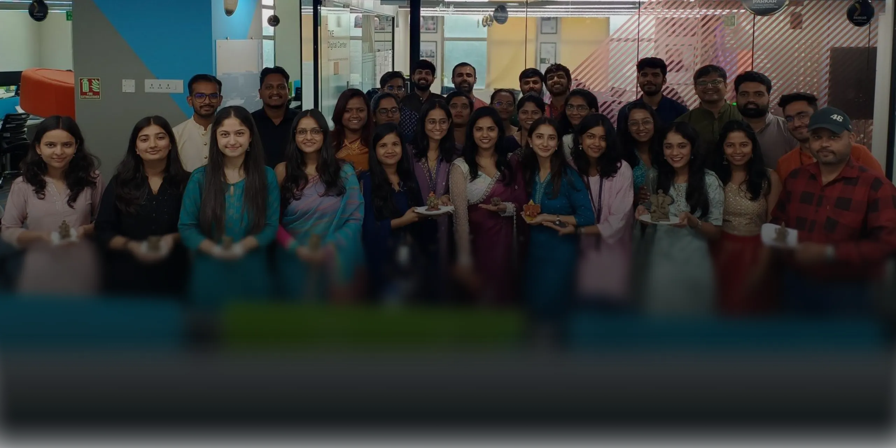
The Path That Shaped Us
A decade ago, Parkar was founded on the belief in the limitless potential within each individual, often untapped in traditional workplaces. Our Founder & CEO, Gaurav, envisioned a company where innovation, experimentation, and boundary-breaking were not just encouraged but celebrated—transcending titles and qualifications. Driven by his own experiences with the constraints of conventional work environments, Gaurav set out to redefine the norm, creating a space where creativity and exploration thrive at every level.
Agentic AI at Scale
- First enterprise clients running production agentic AI workflows powered by AIONIQ — across Financial Services, Manufacturing, and Healthcare.
- Launched rebuilt website positioning Parkar as a platform-led enterprise AI firm across five solution areas: Agentic AI, Data Engineering, Intelligent Application Engineering, Cloud Engineering & Infrastructure, and IT Operations & Managed Services.
- Added IT Operations & Managed Services as a fifth standalone solution, reflecting Parkar's growing managed services practice powered by Vector.
- Expanding AIONIQ practice with a de-risked commercial model — Parkar invests Months 1–2 at no cost, with billing starting only when a production agent is live.
Platform-Led AI
- Launched AIONIQ — Parkar's agentic AI operating model — moving enterprises from fragmented AI pilots to governed, production-ready agentic workflows powered by LangGraph, CrewAI, and the Natoma Enterprise MCP Gateway.
- Evolved Vector — expanding from Azure cloud operations to a multi-cloud IT operations intelligence platform with AIOps correlation, FinOps dashboards, security posture monitoring, and ITSM integration.
- Grew to 250+ global client engagements across Healthcare, Financial Services, Manufacturing, and Technology.
- Expanded operations across the EU and UK.
- Achieved Databricks Silver Brickbuilder Partner status.
Going Global
- Serving 100+ clients across North America, Asia Pacific, and the Middle East.
- Recognized as a top technology partner by Microsoft and global industry leaders.
- Launched specialized GCC Build-Operate-Transfer and managed service offerings.
Building the Future
- Launched Vector, Parkar's AI-powered platform for intelligent operations and AIOps.
- Expanded GCC practice with structured engagement models and dedicated delivery centers.
- Deepened capabilities in GenAI, cloud modernization, and data platform engineering.
Scaling Impact
- Established a strong presence in Singapore and Dubai, expanding into APAC and ME markets.
- Grew team to 500+ engineers and consultants across global delivery centers.
- Accelerated cloud modernization engagements for Fortune 500 clients.
AI-First Vision
- Pivoted to an AI-first strategy, embedding GenAI into all core service lines.
- Deepened Microsoft Azure partnership to achieve Gold Partner status.
- Launched Parkar Academy — an internal upskilling program for the next generation of tech talent.
Resilience
- Shifted to a fully remote-first model, maintaining all client relationships during COVID-19.
- Accelerated cloud adoption and digital transformation services across the enterprise sector.
- Grew client base by 40% as enterprises fast-tracked their modernization journeys.
Enterprise Scale
- Became a Microsoft Gold Partner for Cloud Platform and Application Integration.
- Won strategic enterprise accounts across financial services, media, and healthcare sectors.
- Launched dedicated data engineering practice serving large-scale analytics projects.
India Operations
- Established the Pune delivery center, significantly expanding engineering capacity.
- Built cross-functional teams spanning cloud, data, and application modernization.
- Secured first long-term engagement with a global technology company.
Growing Fast
- Grew to 50+ engineers and consultants driving meaningful client outcomes.
- Delivered first large-scale data modernization project for a Fortune 500 enterprise.
- Expanded service offerings into application modernization and digital transformation.
First Big Win
- Secured the first enterprise client in the financial services sector.
- Formalized the company's focus on Cloud, Data, and Application services.
- Defined the foundational values and culture that continue to guide Parkar today.
The Beginning
- Parkar was founded in Chicago by Gaurav Singh with a mission to transform technology for good.
- Started with a small, passionate team of technologists building something truly meaningful.
- Established core belief: limitless potential exists within every individual.

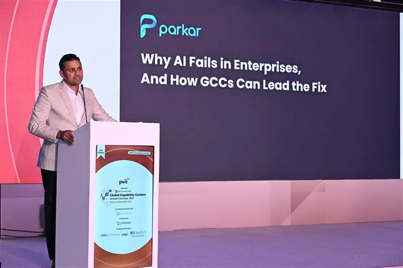
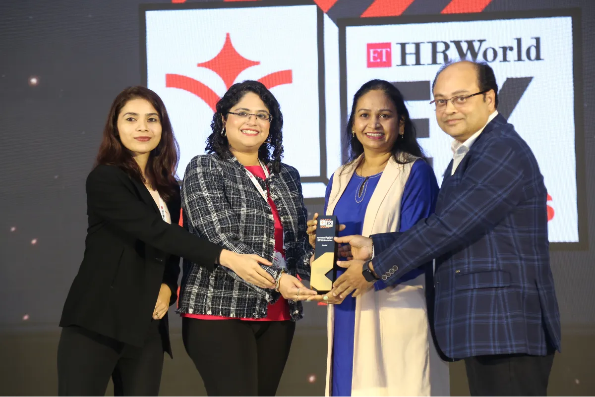
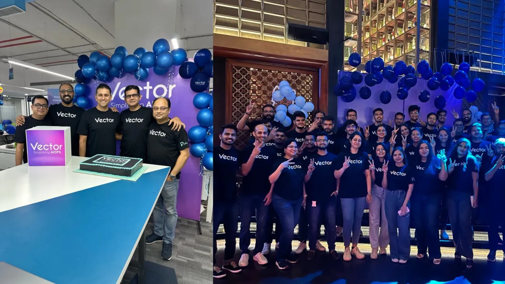
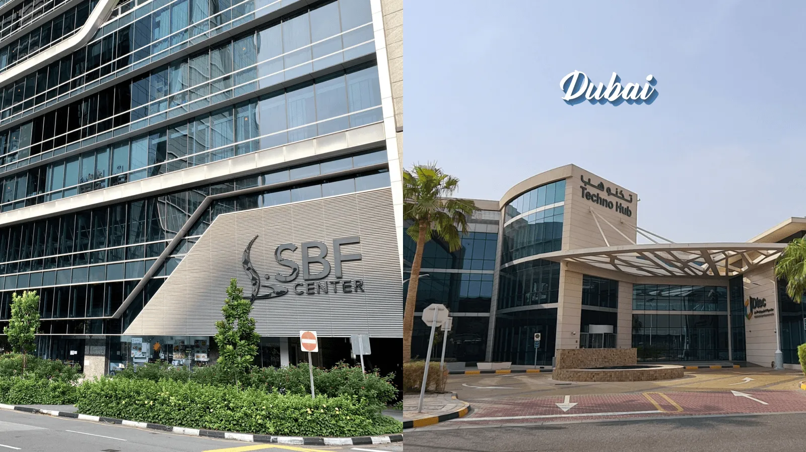
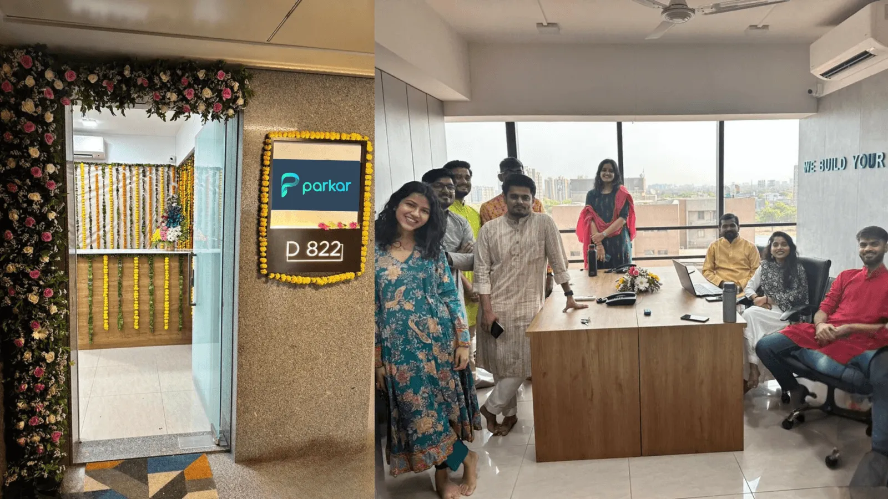
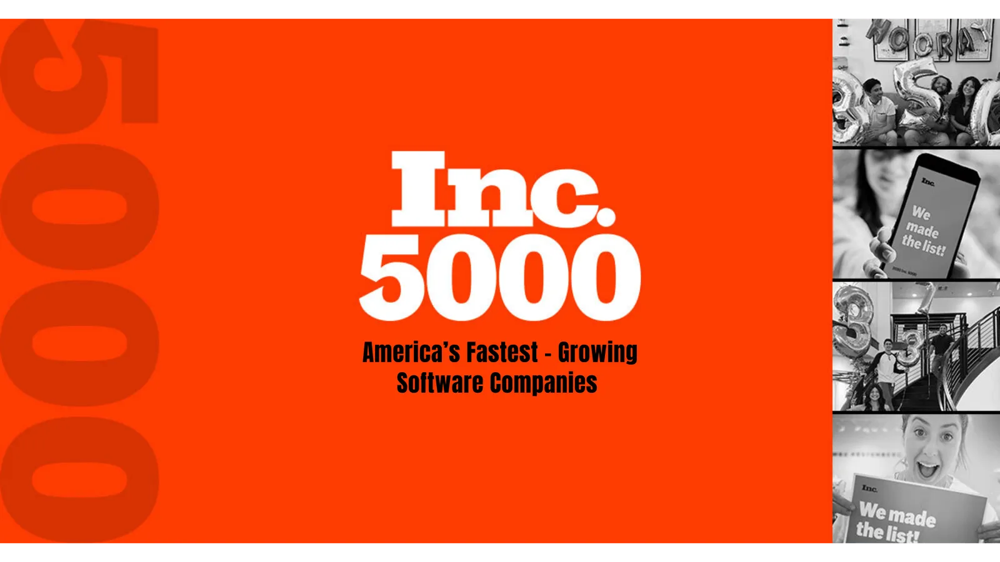


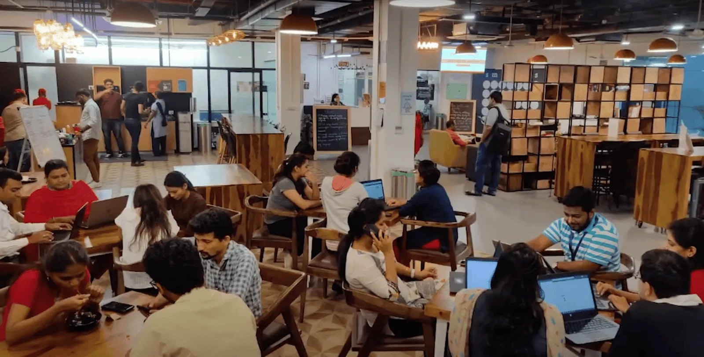
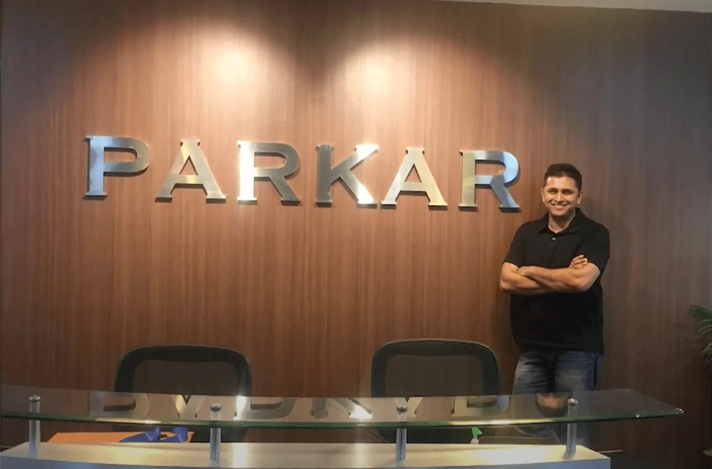
Guiding Parkar's vision
Gaurav Singh
Founder & CEO
I'm the Founder and CEO of Parkar — and a first-time entrepreneur who started as a regular engineer. When the opportunity to build something of my own came along, I bet on myself. That decision has led to one of the most rewarding journeys of my life: building multiple teams and offices, creating two platforms that are close to my heart, and growing Parkar into a firm serving over 100 enterprises across North America and India. Outside work, I'm an active multi-sport athlete and 5 AM club member — I believe merit and team-based outcomes build the best cultures, in sport and in business.
Amit Gandhi
Co-Founder & CTO
I'm the Co-Founder and CTO at Parkar, where I've spent the last decade building and scaling a global engineering organization from the ground up.My focus is turning advances in AI, data, and platform engineering into outcomes that matter. I work with Fortune 500 enterprises to move beyond fragmented systems and experimentation, helping them operationalize AI and build scalable, data-driven platforms.I operate at the intersection of strategy and execution, ensuring ideas translate into real-world impact at scale.Outside work, I'm a father to two Gen Zs and unwind with LEGO builds, playing the guitar, and reading. Patience, structure, and creativity guide both my work and life.
Jigar Shah
Chief Product Officer
I'm the Chief Product Officer at Parkar, leveraging 24+ years of IT experience to drive customer value through AI. A defining career highlight is leading Vector, our AIOps platform that empowers IT teams to shift from reactive firefighting to proactive, intelligent management. Alongside reshaping IT, I champion AI-led transformations for our industrial sector customers, helping legacy enterprises build smarter, resilient operations.Outside work, I am passionate about driving, exploring heavy machinery manufacturing, and observing wildlife. I believe studying the intricate, interconnected systems of the natural and mechanical worlds fuels the vision needed to build truly transformative technologies.
Kiran Satpute
Chief Finance Officer
I'm the CFO at Parkar, where I lead Finance & Strategy with a focus on building businesses that grow with discipline and purpose. Over two decades, I've helped clients build systems that scale, not just reports that run. I've worked across finance, operations, and strategy to structure cross-border operations and support client expansion across markets. I care deeply about the fundamentals that make growth sustainable: clear processes, strong governance, continuous learning, and disciplined execution. These aren't just principles I believe in — they're the foundation I build on every day. Outside of work, I find balance through travel, hiking, giving back to society, and staying committed to wellbeing. I believe the same qualities that drive great teams — discipline, consistency, and a willingness to show up for each other — are the ones that shape a life well lived.
Prosenjit Dass
Head – Enterprise Data & AI Solutions
I head the Enterprise Data & AI Solutions at Parkar. My path here isn't conventional — I led HR before I led the Data & AI Business. That experience shapes how I work. I build teams that deliver, not just pipelines that run. In the past few years, I've helped business leaders focus on what matters in Data and AI, turning big goals into programs that deliver successful growth.From experience, I've learned that Data and AI are more than just technical challenges. The real challenge is fitting them smoothly into teams, systems, and daily decisions. Outside of work, I am passionate about sports, particularly Test cricket. This sport reinforces the importance of patience, strategic clarity, and sustained effort in achieving long-term success.